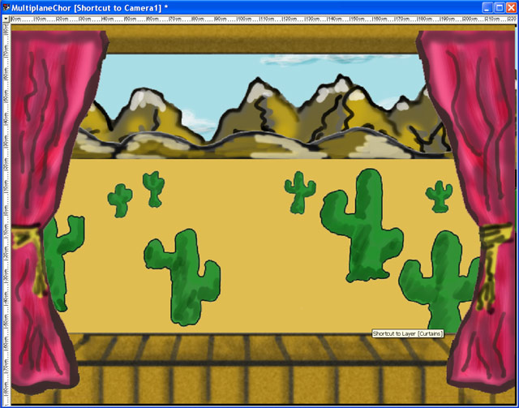
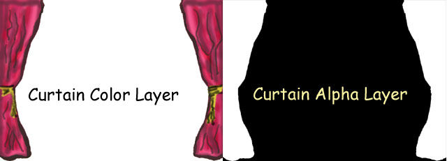
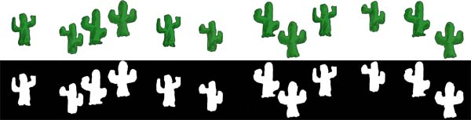
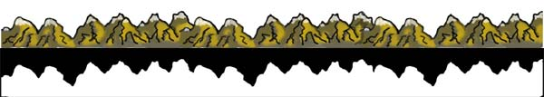
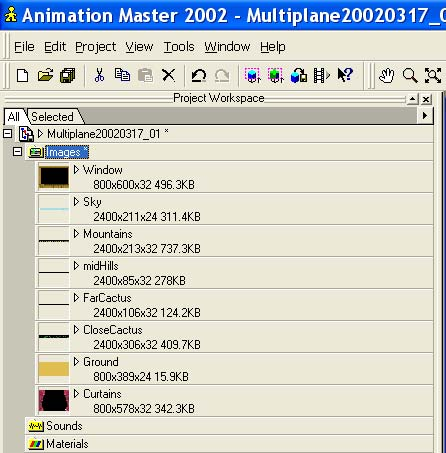
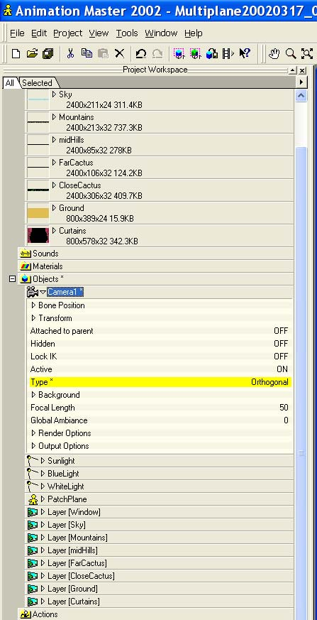
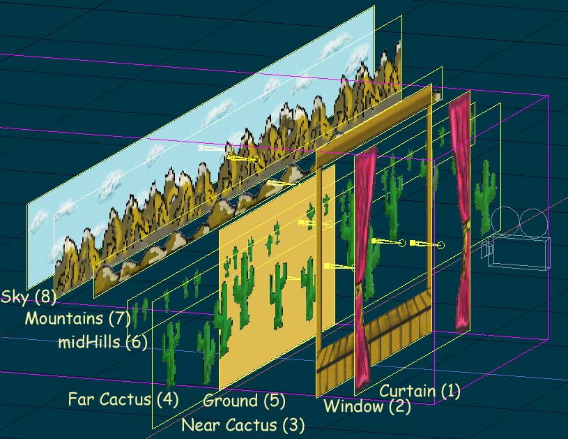
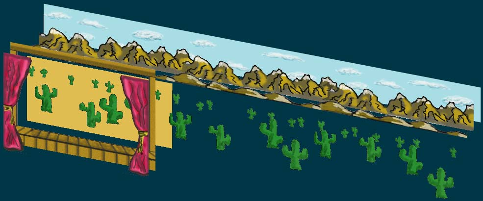
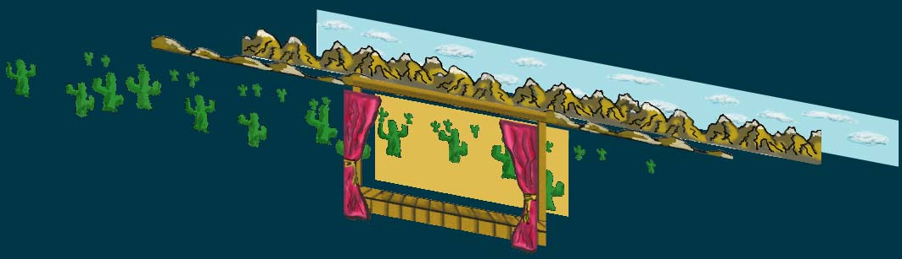

|  | ||||||||||||||||
Tutorial: A:M LayersMarch 17, 2002 |
||||||||||||||||
One of the features in Animation Master that offers some interesting options for animation are A:M layers. Very simply, layers are either static images or animations that can be put on a layer in front of the camera. These layers can be moved in 3D space to arrange for an effect. In this very simple tutorial I'll demonstrate how we can use very simple 2D images to emulate a tried and true tool from classic animation: layers used to simulate parallax. Parallax, according to Webster's is "the apparent displacement or the difference in apparent direction of an object as seen from two different points not on a straight line with the object". Very clear, no? How about this. Think back to when you would travel in a car as the passenger. You'd look out the side and while the mountains at the horizon would stay fixed, the foreground (fields, bushes, whatever) would be whizzing by. That's parallax! We're going to model that effect much as you've probably seen it many times in classic 2D animation. Hopefully it'll give you some ideas and I'll toss in a few more at the end. Step 1: The layersSince we're going to emulate the countryside passing by, we need layers for the countryside. What I'm actually going to shoot for is a stagecoach traveling through the SouthWest. So, what layers do we need? Let's think keep it under control but go a little nuts:
Mind your Alphas!Let's start with the Curtain layer. The rest are done pretty much the same way. Since we're going to emulate a 2D animation principle, I'm going to use 2D images. We won't be in A:M for a bit. Break out your favorite paint program. Basically anything that can save out a Targa (.tga) with an alpha channel. What I did for the Curtain image is to paint the curtains (now you know drawing and art are not what I do for a living). Next I selected the curtains, reversed the selection and saved that information as an alpha layer. I'm going to assume you can figure out how to do that in your favorite paint program. Here's what my curtain layer looks like and next to it is the alpha layer. Remember that with alpha layers, where it's black we'll see through the image, where it's white we'll see the image. Layers of gray allow you to do partial transparency. For a bit more information, here are images of the nearCactus and Mountain layers. For reference, I made the Curtains and Ground and Window layers 800x600. For the cacti and mountains and sky I made them 2400 pixels wide so I could move them by the window a reasonable amount. I cloned an 800x600 three times to create the 2400 pixel image and moved some things around  Step 2: Creating LayersLet's assume that you've built the various images to make up our layers. Now we're going to lay those out in Animation:Master The first thing to do is import your images in to A:M. Go to Images in the PWS, Right Click on Image, select Import->Images/Animation. Pick your Curtain image. Do the same thing for each of the other seven layers. You should now see something like this: Next, create a default choreography. Change the camera from Perspective to Orthogonal. This will give us a square view from the Camera. Or as described in the A:M Manual: "Orthogonal cameras don’t have perspective, so objects in the background are not automatically made smaller than those objects closer to the lens." Since we're going to draw our mountains how we see them, smaller in the distance and that way we retain control over the perspective. Now from the Objects submenu, choose New->Layer->Curtains (assuming that's what you named the Curtains image). This will create our layer. Be default a layer is set with an ambiance of 100%. This means it's self-illuminating. It'll be lit just as we drew it. Do the same thing for each of the other images. Your Object list should look like this: Step 3: Arranging the Layers in the ChoreographyCreate a default choreography. Delete the lights since we won't need them for this experiment. Now drag each of the layers to the choreography (Left-click on each layer, hold it down and drag and drop it on Choreography1) Since we need to pay attention to what sits in front or back of what, we need to arrange the layers as we would like them to be seen, from nearest the camera to furthest. After rearranging the layers, it should look something like this: Note that since we're using an Orthogonal camera (which is why the purple box is a rectangle), we can put distance between the layers or jam them closely together. In this case it's clearer if we leave some space between the layers. Let's check the view from camera. Not bad! If things aren't where you need them to be, select the layer in the choreography and adjust them from the camera view. Or pick Bird's Eye and hit, say, '1' to restrict the movement of the layer to back and forth on the X-axis. Step 3: Time for some animation!In this case, we're going to have the various background layers pass from the right to the left, as if we're moving from the left to right. To start out, from whatever view works for you, move all the layers so they all line up on the left edge of the camera view. Like so: Now move the timeline to something like 10:00 (10 seconds) . And now we get to the fun part, the part that requires some eye and some gut instinct. Parallax as we defined it earlier means that stuff that's closer will appear to move by more quickly than stuff further away. To that end, let's move the sky and the mountains about a third of the way to the left (don't forget to hit the '1' key to constrain the selected layer to movement on the X-axis). Move the midHills to the left about half way. Move the farCactus two thirds of the way to the left and the nearCactus so the right edge lines up with the right edge of the view. Like so: For a bit more fun, feel free to move the Window and Curtains layer a bit through the animation. This will give a sense of the carriage bouncing a bit and the curtains shifting around, just adding to the sense of motion. Now if you scrub back and forth on the time bar, you should see the layers traveling from right to left but with each layer moving at a different rate. If you think it looks okay, give it a whirl and see how the animations look. Things to note:
ConclusionsThere! All done! We've managed to replicate using a 21st century animation package something classic animators were doing 75 years ago! Hopefully this tutorial gave you some ideas. If not, how about:
Downloads
|
||||||||||||||||
| |
||||||||||||||||
|
This document maintained by
webmaster@mossor.org. |